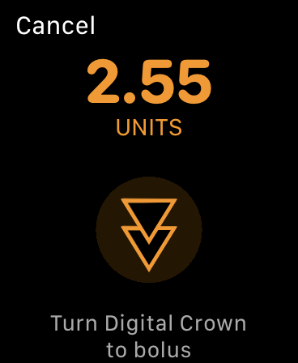

Loop Releases
Loop Releases¶
The new features added with each Loop release (starting with Loop version 2.0) are provided for reference.
Loop 3 Compatibility¶
Be aware that Loop 3 is forward compatible:
- You can build Loop 3 over older versions of Loop and maintain therapy settings as well as your configuration for CGM and pump (including a pod)
Loop 3 is NOT backwards compatible. Once you build Loop 3 or later on your phone, you cannot return to Loop 2.2.x or FreeAPS without some additional work.
- Be prepared to enter all your settings again and start a new pod
- If you use Loop Follow, you do not need to delete Loop Follow
- The list of apps you need to delete are on the specific phone where you are trying to downgrade to an older version of Loop from Loop 3
- You need to delete all apps that you built with Xcode that share an app group id
- The list of apps that share an app group includes Loop, FreeAPS, FreeAPS X, xDrip4iOS, Glucose-Direct, and the g5 Transmitter Reset app
For more information, click on Remove Apps with Shared App Group
Current Release¶
The current released version for Loop master is v2.2.9. The dates and contents for Loop releases from v2.0 through v2.2.9 are summarized below in reverse chronological order (so newest release information comes first).
Check Current Release Status
Release information is always found on the GitHub LoopKit/Loop release page. The information on this LoopDocs page is a summary of that information with a little extra explanation.
Be aware that updates to LoopDocs may take some time after a new release comes out.
How do I Know What Version I Have?
Tap on the Settings icon at the bottom of the Loop app main screen and look at the version information at upper left. This graphic was generated with an older version, Loop 2.2.8.

Loop v2.2.9¶
This release updates Loop to handle Dexcom Share server changes for how glucose trend is parsed. Dexcom used to provide integers that mapped to the meaning for the arrows. They changed that to strings, like "Flat" or "FortyFiveUp".
This is now the new master, so you build it using the standard updating procedure Build Updating.
Loop v2.2.9 was released on April 4, 2022.
Loop v2.2.8¶
This is a hotfix (no features were modified in the Loop app) to enable the app to be built with Xcode 13.3.
Loop v2.2.8 was released on March 16, 2022.
Loop v2.2.7¶
This is a fix (no features were modified in the Loop app) to enable the app to be distributed via TestFlight.
Loop v2.2.7 was released on Jan 11, 2022.
Loop v2.2.6¶
Several users reported issues with IOB accounting in Loop v2.2.5, where IOB was being under-reported, which could cause Loop to continue recommending increases in insulin delivery. A fix was made and provided as Loop v2.2.6.
This is a serious issue, so updating to this release is strongly recommended for anyone currently running v2.2.5. If you tap on Loop Settings and look at the top, and see LOOP V2.2.5, then rebuild ASAP. The time window when you would have built v2.2.5 is from Aug 22 through Sep 6, 2021.
The issue appears to be the result of a failure to write to Apple HealthKit, which may occur if the Health app on your phone is having problems, or if you have turned off Loop's ability to write Insulin data to HealthKit. The fix involves reverting a change made in v2.2.5. This change was an attempt to reduce overlaps of Reservoir and Pump Event reconciliation which intermittently over estimate insulin delivery. Instead, that issue will be fixed in the next major release of Loop.
Thanks to all who helped with reporting, digging, and testing this quickly. It's great to have such a strong community of people eager to help.
Loop v2.2.6 was released on September 6, 2021.
Loop v2.2.5¶
This is an interim release as we prepare for the major changes currently in development. If you are running an older version of Loop, such as v2.2.4 (master or automatic-bolus branch) or an older version, it is recommended that you update to v2.2.6 to get all these new features. A summary of modifications with respect to Loop v2.2.4 is listed below.
Loop v2.2.5 was released on August 22, 2021.
New Features:¶
Automatic Bolus (Experimental) Dosing Strategy
- Users may select Dosing Strategy
- Default Dosing Strategy continues to be Temp Basal Only
- Automatic Bolus Dosing Strategy is marked experimental
- If you used Loop v2.2.4 automatic-bolus branch, this release will behave the same
- If you used Loop v2.2.4 master branch, approach this feature with caution; it may require changes to settings
- Tracking automatic vs manual boluses is not yet implemented in the code and databases
Provisioning Profile Expiration Notifications:
- User gets notified when Loop app expiration date nears
- Expiration date is included in the issue report
RileyLink Compatible Devices:
- The RileyLink compatible device displays are pump independent
- OrangeLink Support added for connection monitoring, battery level alerting, find device, and light/vibration controls
- Medtronic Pump Settings screen updated with option to disable MySentry use; user can trade Medtronic pump battery for longer RileyLink compatible device battery life
Omnipod Features:
- Pod Settings layout: improved layout and functionality
- Fault Codes: PDM style Ref code displayed for pod faults
- Confirmation beeps: improved and more uniform implementation
- Pod Suspended: pod beeps once every 5 minutes until delivery is resumed or alarm cleared
Code Fixes:¶
Omnipod Code Fixes:
- Make insertion more robust (LoopKit issue #1369)
- Fix “Pod already primed” errors when priming cancelled (rileylink_ios issue #661)
- Prevent 049 pod faults during setup (rileylink_ios issue #627)
- See RileyLink Pull Request 676 for additional details.
(REMOVED) Insulin Accounting:
- Reduced occurrences of overlaps in accounting for insulin via reservoir and dose history, which causes temporary overestimation of IOB
- See Loop Pull Request 344 for details
- This modification (in v2.2.5) was removed for v2.2.6
- It worked as advertised during testing, but . . .
- If the user's phone had trouble communicating with the Apple HealthKit app, this could cause IOB to be under-reported and cause Loop to provide more insulin than needed
Dexcom Non-US Share:
- Dexcom Share URL for non-US users has been fixed.
For community support, please use one of the Loop Social Media help sites.
Loop v2.2.4¶
Released October 3, 2020 with "fixes" introduced without renumbering the version number. Last change was on January 19, 2021.
- Revert to previous date pickers (Thanks @novalegra!)
- Pod fault handling improvements (Thanks @itsmojo!)
- Fix issue with pod status screen not allowing new pod pairing or continuing of interrupted pairing.
- October 22, 2020, update travis to make it work with Xcode 12
- January 19, 2021, pin the carthage to 0.36.0. Users no longer required to install homebrew or carthage
Older Loop Releases¶
Loop v2.2.3¶
Released September 25, 2020
Warning - Rebuild ASAP for Pods
- A bug was introduced in this version, quickly fixed in v2.2.4.
- If you use pods, please rebuild using v2.2.6.
- Fetch pump and cgm data on manual loop retry (when Loop icon is red or yellow)
- Re-arranged pod status screen to prioritize needed information and actions.
- Pod pairing fixes for more edge cases.
- Translation updates.
- Fix share server integration, pointing to share2.
- Report RSSI and low gain in Read Pod Status command.
- Report failure properly when Play Test Beeps command fails.
- Carthage build fix for Xcode 12.0.1
Loop v2.2.1¶
Released August 9, 2020
- Include pending insulin in:
- forecast uploaded to Nightscout
- status extension forecast
- Updated translations, fixes for temp override translations, new Arabic translations.
- Omnipod integration fixes:
- Avoid suspending during deactivation if pod has a fault, is in setup, or already suspended.
- Show the correct expected address in invalid address error
- Reuse same address during attempts to pair with same pod
- Fix for Medtronic only: when a bolus issued via the Loop interface was canceled by issuing a suspend on the pump itself, Loop will incorrectly track the bolus as if the full amount were delivered
- Updates for omnipod packet parser
- Suggest moving RileyLink to new area on multiple pairing failures
- Minimed updates:
- Detect temp basal cancellation performed on pump
Loop v2.2¶
Released April 17, 2020
- Updated carb/bolus screens. Thanks @mpangburn!
- Carbs and boluses are now entered together, which is a more familiar model to many caregivers.
- Forecast preview while entering bolus allows you to see potential impact of your bolus before delivering.
- Improvements in Watch updates; sleep data being used to update complications when you are awake. Thanks @novalegra!
- Omnipod pairing improvements. Bug fixes, and better error messaging. Thanks @itsmojo!
- Many performance improvements, especially effecting long time Loop users. Delays in rendering graphs during app launch should be fixed.
- New device communication logging facility- Additional logging across pod swaps, and logging of CGM communication.
- Rendering fixes to prevent insulin graph from drawing outside of bounds.
- Bug fix to align use of 10m insulin delay in dose computation and forecast.
- Include current bg in suspend threshold evaluation.
Loop v2.0¶
Released December 31, 2019.
For Reference Only
Enough time has passed that this version should no longer be on anyone's phones (the one-year expiration time should take care of that).
There is a lot more detail provided in the Loop v2.0 section because it constituted a significant change to parts of Loop from prior releases. This section and the Omnipod-Testing branch sections are left here for historical interest.
What was new in Loop v2.0?¶
This is a highlights reel comparing Loop v2.0 to v1.9.6.
Uploading of BGs to Nightscout¶
Loop v2.0 has an option to upload your BG data to Nightscout directly. It is a new slider under the CGM configuration section for Dexcom users. After you add your CGM transmitter ID, go back into the CGM info and you'll see a new slider called "Upload Readings." Technically, Loop's dev branch had that feature for a hot minute before Loop v2.0 was released...but for almost everyone this will be a brand new feature they haven't had before. This feature can help if/when Dexcom's Share servers ever go through another large outage like we had before. If that happens, you can turn on the "Upload Readings" switch and your CGM data will now be in Nightscout even without Share servers working properly. Good practice would be to temporarily disable your Share bridge in Nightscout while Loop is responsible for CGM uploading so that you don't get duplicate data. You can disable Share bridge by logging into your Heroku account, going to the Settings tab, clicking on "reveal config vars" and then deleting the word "bridge" from the ENABLE line.
A fix for settings loss¶
iOS 13 brought about a quirky little bug where you could suddenly lose settings in Loop. But, it wasn't just limited to Loop, sometimes people lost Dexcom app settings too. The issue is most common when the phone goes through a power cycle, but it has happened at other times, too. There's a fix for that new bug in Loop now...so that's a good reason to update. (If you encounter that bug before you have a chance to update your Loop app, simply restart the Loop app and your settings should reappear.)
Spin for Watch Bolus¶
To prevent an accidental bolus from your Watch app, don't let your kids hold your watch. Just kidding, we've added an even better option. There is a new "spin" to confirm the bolus after you press the bolus button. You'll see a graphic like below on the watch face. As you spin the digital crown, the two triangles will begin to merge. Once they merge, the bolus is confirmed through a little haptic and a white checkmark will appear on the watch screen.

Watch recommended bolus¶
A common code customization is also now no longer needed. Many people used to edit Loop code to have the Watch app provide 100% of the recommended bolus as the auto-filled quantity in the bolus field (default used to be 75%). Loop now offers the 100% auto-filled recommendation, no code customization needed now.
Recent carbs list on Watch¶
You can review the recent carb entries on your Apple Watch now. Simply swipe left to see the blood glucose graph screen on your watch. Scroll down with the digital crown to the "active carbs" row beneath the graph, and tap that row. You can see the list of recent carb entries.
Fix for Medtronic x15 "bolus may have failed" message¶
A lot of Medtronic x15 users received "bolus may have failed" messages after each bolus. That issue has been fixed and a patched version of Loop is no longer needed. All good!
Confirmation beeps expanded¶
Confirmation beeps have been expanded based on user feedback...we heard parents and school nurses really appreciate hearing a beep for not just boluses, but also for suspend/resume commands and editing basal schedule (so you are sure it saved properly). So, confirmation beeps are now for boluses, suspend/resume, and basal schedule edit saves.
Read Pod Status added¶
There's a new command in the RileyLink menu for "Read Pod Status" that is analogous to the existing command for Medtronic users. You can query your Pod for its current status info using that command.
Bug fixes generally¶
There are a lot of niggly little bug fixes too which were merged in the last couple weeks. The temp basal timestamp for Medtronic Loop (and for older Omnipod Loops, too) had a bug that when Loop reverted to scheduled basals, the timestamp on the HUD's temp basal icon would switch back to the time the Loop was launched (instead of the time the scheduled basal was started again). There are also some new code improvements for handling uncerain boluses for Pod Also, there are improvements to handle how Loop marks Pod suspend commands that are initiated by users while an active temp basal is in progress.
User interface improvements¶
You'll notice dashed lines in the HUD for the CGM value if the CGM data goes older than 15 min (that way you don't accidentally miss the fact that your CGM has failed). The API Secret is hidden after it is saved in Loop Settings now, and if you accidentally leave a trailing slash on the Nightscout URL...Loop will ignore it. The bolus progress row is new to master branch now, although many of you have been accustomed to that visual in dev branch for awhile now. The "Scenarios" screen that would sometimes appear when a phone was shaken is also disabled by default now. The Issue Report has more information about your Loop app's build date and version so that you can more easily track its build history.
Common build error squashed¶
One common build error was caused if there was a space in the Loop folder name after downloading. This problem has been fixed and you will no longer get build errors if you have a space in your Loop folder name. (Unless you are building dev branch, currently v2.3.0, - then no spaces allowed.)
Nightscout profile uploading¶
Loop will upload your basal schedule, ISFs, carb ratios, and override presets from Loop settings to your Nightscout profile. If you ever lose your phone and need to setup Loop brand new...your settings will be easy to find in Nightscout now.
New languages¶
Japanese, Danish, Swedish, Vietnamese, Finnish, Portuguese (Brazilian), Polish, and Romanian languages were added to the regional translations for Loop. There are definitely some missing strings that will still need touchups...we will get those fixed up in Loop v2.1 if you all help report those when you see them. Thanks!!
Non-linear carb model¶
All branches (master and dev) now use a "non-linear" carb model, so let's give some info about the change.
Previously, the carb model Loop used had a linear absorption predicted with dynamic carbs adjustments. What this means is that food absorption was modeled as a flat, even effect (like the straight grey graph that you'll see in the Insulin Counteraction Effects chart after you added a carb entry. But looking at large groups of meals' datasets (and supported by personal, anecdotal experiences), food really has a bit more of a non-linear absorption. Meaning, we usually see more of a food impact up-front than the old carb model in Loop predicted.
What did that mismatch mean for us if the model predicts a linear absorption, but the meal actually behaves differently?
- Bolusing: You've probably seen smaller upfront boluses for meals than you would have preferred. This is because the insulin was predicted to over-power the linear (slower) carb model soon after a bolus is given.
- Early low temp basals: You've also probably seen a tendency to have early zero basal or low basals set by Loop for the first 30-60 minutes after a meal bolus if you don't have a significant blood glucose spike immediately after the carb entry. This might have been even more obvious for those of you who are regularly waiting to eat after a bolus, too.
With a non-linear absorption model, the carb absorption will more closely match observed blood glucose impacts we've seen after meals. And when the model is more closely matching actual experience, that means the predicted blood glucose curves will do a better job at providing more upfront bolus and not having the tendency to have overly conservative temp basals soon after a meal.
What should you expect? Like the description above, you'll likely see more complete bolus recommendations and less low temping after a bolus. With that in mind, if you've made adjustments to your Loop habits or settings to overcome those issues previously, you may want to undo those habits. Like if you shortened carb absorption times to help get larger boluses upfront, you may want to go back to standard times. Keep an eye on things and you should adjust as needed.
What if you want to go back to the old model? You will have to edit a line in LoopKit's LoopKit code here to use .linear if you wanted to go back to the old carb model. If you want to read more about the model, please check out the Zulipchat thread here. But realize that the code edit for changing models would be easiest done using a LoopWorkspace because the edit is in one of the frameworks that Loop uses (rather than Loop code itself), so this is one of those instances where you will have to do some work to learn how to use a LoopWorkspace properly.
Overrides¶
Loop v2.0 marks the first time Loop master branch has overrides included. Additionally, this release moves overrides setup from the configurations area of Loop settings to the workout icon in the Loop toolbar. There has also been bug squashing in dev branch for overrides over the recent past, so updating is a good idea even if you already have overrides on your current build. Want to learn more about overrides? Read about them here.
Retrospective Correction always on¶
Retrospective correction used to be an optional toggle in the algorithm. It is now on by default all the time. It is an important part of the algorithm (helps Loop look at how good/bad its recent prediction curve has been vs reality), and leaving it on made sense anyways.
Omnipod support¶
Yes, most of you are already using Omnipod with your Loop...but this is the first time that Loop master branch supports Omnipod users. Please update if you have been using Omnipod-testing branch especially...it's time to get all the bug fixes that we've done in Loop.
Dark mode support¶
iOS 13 brought dark mode for application developers, and Loop's developer was all over that. We now have a wickedly cool dark mode Loop for those who prefer the dark side.
ISF and correction range guardrails and UI change¶
Loop v2.0 also brings about the first time master branch has the useful scroll wheel to set values of ISF and correction range. This helps mitigate an old bug where backwards entered correction range values would crash Loop app. Also less prone to fat-finger mistakes on entry.
Simulator pump and CGM¶
If you don't have compatible gear yet and just want to test Loop app, the new ability to add a simulated pump and/or CGM is a great new feature.
New style of Dexcom transmitters supported¶
Dexcom launched a new style of transmitters this summer. The new transmitters took some work by Loop developer (PETE! YEAH!) to get them working in offline Looping, but the fix was pushed into all branches shortly thereafter in August 2019. If you haven't updated your Loop since August 2019 and use a Dexcom G6, you should update now.
Remove Apps with Shared App Group¶
The storage of data with Loop-dev is not backward compatible. In other words, if you attempt to build Loop 2.2.x (or FreeAPS) on a phone which has been upgraded to Loop-dev, you will not be able to run that app. You can successfully build the app, which will overwrite Loop-dev on the phone, but the app will crash and you will not be able to Loop.
At this point, you can restore your Loop-dev build on your phone and continue using Loop-dev or you delete all apps on your phone with a shared app group. This list includes Loop, FreeAPS, FreeAPS X, xDrip4iOS, Glucose-Direct, and the g5 Transmitter Reset app.
If you tried to delete "all" the apps and still have something causing an issue; you can follow the directions to Review Provisioning Profiles and then delete the profiles for all the apps by using the - sign.
You do not need to delete Loop Follow, so if you use Loop Follow - do not delete that provisioning profile.